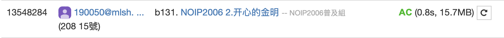

這題就是背包問題的變形，以 i 軸為每項物品，j 軸為價格，令二維DB的表格為staus，status[j]代表在考慮第 i 項物品後價格為 j 時的開心度(價格與重要度的乘積)總和，然候迭代每個物品。
—價格(p)大於 j 代表無法改變，繼承上一次的值
status[i][j] = status[i-1][j]
—價格(p)小於 j 代表可以從stats[i][j-p]加上來去做比較
status[i][j] = max(status[i-1][j],status[i-1][j-p]+p*imp)
最後答案為max(status[-1])
